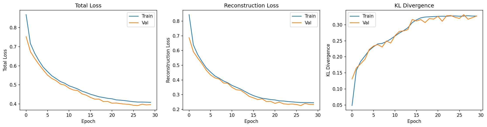

Chapter 03 — The Training Loop: Running It, and Reading It¶
Stages 3–4 of the pipeline: turn the objective into an actual loop, then learn to read what the loop tells you — including how to catch the VAE's most notorious failure. Symbols are in the notation reference.
The data is prepared (Chapter 02) and we know the objective (Chapter 01). Now we run the thing. This chapter has two halves that mirror how training actually feels: first the mechanics — the loop that feeds batches and updates weights — and then the interpretation — sitting in front of a scrolling log and knowing whether what you see is healthy or quietly broken. We stay on the gentle PBMC warm-up here; the perturbation flagship arrives in Chapters 04–06. The mechanics are identical either way.
A one-line recap to stand on. Training minimizes the negative ELBO, a reconstruction term plus a KL term: the reconstruction term wants the decoder \(p_\theta(x \mid z)\) to rebuild the input faithfully, and the KL term wants the encoder's cloud \(q_\phi(z \mid x)\) to stay near the prior \(p(z) = \mathcal{N}(0, I)\). Training is the tug-of-war between them.
One knob worth adding: β¶
Before we run anything, we add a single dial to the objective. In practice we rarely weight the two terms equally; we scale the KL term by a number \(\beta\) ("beta"):
Here \(\mathcal{L}_{\text{recon}}\) is the reconstruction loss (the negative decoder log-likelihood — the NB likelihood for our count data, an MSE for a Gaussian decoder) and \(\mathcal{L}_{\text{KL}}\) is the KL term. When \(\beta = 1\) this is exactly the standard VAE from Chapter 01. Turning \(\beta\) below 1 prioritizes reconstruction and tolerates a larger KL; turning it above 1 leans on regularization and pushes the encoder harder toward the prior, which encourages a more disentangled latent space. The reason \(\beta\) matters so much in practice — and why it isn't just a cosmetic weight — becomes clear once we meet posterior collapse, because \(\beta\) is the main lever for preventing it.
The loop itself¶
A training loop is humbler than the theory around it. We repeat the following over many passes through the data (each full pass is an epoch), feeding the model a batch of cells at a time rather than one or all at once. For each batch: run the cells through the encoder to get \(\mu\) and \(\sigma\); draw a latent \(z\) with the reparameterization trick \(z = \mu + \sigma \odot \varepsilon\) (the trick from VAE-04 that keeps the sampling differentiable — the noise \(\varepsilon\) is fixed, so gradients flow through \(\mu\) and \(\sigma\)); decode \(z\) to a predicted distribution over the counts; compute the two loss terms; and let the optimizer nudge the weights \(\phi\) and \(\theta\) downhill.
flowchart LR
B["batch of cells x"] --> ENC["encoder q_phi<br/>-> mu, sigma"]
ENC --> SAMP["sample z = mu + sigma * epsilon"]
SAMP --> DEC["decoder p_theta<br/>-> predicted counts"]
DEC --> LOSS["loss = recon + beta * KL"]
LOSS --> BP["backprop -> update phi, theta"]
BP -.->|next batch| BThe optimizer is almost always Adam, a robust default that adapts its step size per parameter; you rarely need anything fancier for a VAE. The only VAE-specific subtlety in the whole loop is that sampling step — and the reparameterization trick is precisely what makes it ordinary, letting the gradient pass through a random draw as if it weren't there. Everything else is the same loop you'd write for any neural network.
Reading the training log¶
Run the loop and it prints something like this each epoch (or every few):
epoch 001 | train loss=0.8684 recon=0.8440 kl=0.0488 | val loss=0.7531
epoch 005 | train loss=0.5926 recon=0.4825 kl=0.2203 | val loss=0.5779
epoch 010 | train loss=0.5083 recon=0.3807 kl=0.2554 | val loss=0.4987
epoch 018 | train loss=0.4374 recon=0.2755 kl=0.3238 | val loss=0.4253
Three numbers carry the story. The loss is the full objective, \(\text{recon} + \beta \cdot \text{kl}\), and lower is better. The recon is the reconstruction term alone — how faithfully the decoder rebuilds the input — and we want it falling. The kl is the KL term, and reading it is less obvious than it looks: it measures how much the latent space is being used, so we actually want it to rise off the floor early on and then settle, not to sit at zero. The val columns repeat the loss on held-out cells the model never trained on; when train and val track each other the model is generalizing, and when they peel apart the model is overfitting.
So a healthy run looks like the log above: total loss decreasing, reconstruction improving steadily, KL climbing from near-zero (here 0.05) up to a modest plateau (here ~0.32) rather than collapsing back down, and train ≈ val throughout. The one counter-intuitive habit to build is to distrust a KL that stays near zero, even though it makes the total loss look pleasingly small — which brings us to the failure this chapter is really about.
The KL term up close¶
The KL has a closed form for our Gaussian encoder against the standard-normal prior, summed over the \(d\) latent dimensions:
We worked this number by hand in Chapter 01 and got ≈0.07 for one example cell. Reading the aggregate KL across a run is a matter of calibration. A value near zero means the encoder's cloud has become the prior — \(q_\phi(z \mid x) \approx p(z)\) — so the latent carries essentially no information about the input. A modest value, very roughly in the 0.1–1.0 range per the conventions we use here, means the latent is encoding meaningful, input-specific variation. A very large value can signal underfitting, or that \(\beta\) is too small and the latent is being allowed to drift far from the prior. The single most useful refinement of "the KL" is to look at it per dimension and count how many latent dimensions carry real signal — the active units. A latent of size 10 whose KL is split across, say, 6 dimensions is using its capacity; one whose KL has fled to zero in all 10 has stopped using the latent at all.
Posterior collapse: when KL ≈ 0 is a disaster¶
Here is the trap. Suppose the log shows a KL pinned near zero while the reconstruction still looks fine and the total loss is low. Mathematically nothing is wrong — the model is happily minimizing its objective. But what has happened is posterior collapse: the encoder has learned to output the same distribution, the prior, no matter what cell it's shown, \(q_\phi(z \mid x) \approx \mathcal{N}(0, I)\) for every \(x\). The latent code has become decoration. Every cell maps to the same fuzzy blob, \(z\) carries no information about which cell it came from, and the latent space — the entire reason we built a VAE — is useless for anything downstream.
Why would a model do this to itself? Because it found an easy shortcut. If the decoder is powerful enough to reconstruct cells reasonably well on its own, without leaning on \(z\), then the cheapest way to shrink the loss is to drive the KL term to zero by setting \(q_\phi(z \mid x) = p(z)\) and letting the decoder do all the work from a latent it has learned to ignore. The KL term, meant as a gentle regularizer, becomes a force that switches the latent off entirely. It's most common early in training (before the latent has learned anything worth keeping) and with strong decoders and high \(\beta\).
You detect it by triangulating three signals. The KL curve is the first tell — it stays near zero instead of rising and settling. The latent space is the second: project the codes \(z\) down with UMAP and a healthy model shows clusters by meaningful factors (cell types, here) while a collapsed one shows a single structureless blob. And the downstream tasks are the third and most damning — a classifier trained on collapsed latents performs near chance, because there is genuinely no information in \(z\) to use. (That downstream check is exactly the extrinsic evaluation of Chapter 05, and posterior collapse is the clearest case of a model that looks fine intrinsically yet fails the moment you ask the latent to be useful.)
Fixing collapse: mostly, taming the KL¶
The cures all amount to stopping the KL term from steamrolling the latent before the latent has learned to earn its keep. The bluntest is to lower \(\beta\), so the KL penalty simply weighs less (β = 0.5, or lower for count data, is a common starting point). The most popular is KL annealing: start training with \(\beta = 0\) so the model first learns good reconstructions that genuinely use the latent, then ramp \(\beta\) up to its target over the first several epochs, so the regularizer only arrives once there's something worth regularizing. A linear schedule is the usual form:
def kl_annealing_schedule(epoch, warmup_epochs=10, max_beta=1.0):
"""Linear KL annealing: ramp beta from 0 to max_beta over the warmup."""
return min(max_beta, max_beta * epoch / warmup_epochs)
Two further tools are worth knowing. Free bits carve out a small KL "allowance" per latent dimension that isn't penalized, so each dimension is free to encode a little information before the KL pressure kicks in — a targeted way to keep dimensions active. And cyclical annealing repeatedly resets \(\beta\) to zero and ramps it again, giving the latent periodic chances to relearn. If none of these help, the deeper fix is structural: the decoder may simply be too powerful relative to the task, and reducing its capacity removes the temptation to ignore \(z\) in the first place. For gene-expression work, lowering \(\beta\) and annealing handle the large majority of cases.
What healthy training looks like¶
The figure below is a real run of a conditional VAE on synthetic bulk RNA-seq,
from notebooks/vae/01_bulk_cvae.ipynb:

Read it left to right. The total loss (left) falls smoothly, train and validation descending together with no gap opening up — no overfitting. The reconstruction (center) drops fast and then plateaus as the decoder learns. And the KL (right) rises from about 0.05 to about 0.32 and stays there — the latent space being switched on and then used, the opposite of collapse. This is the textbook healthy run: good reconstruction, an active latent, and train tracking val.
For contrast, here is what a collapsing run would whisper at you:
epoch 001 | recon=0.85 kl=0.04
epoch 005 | recon=0.42 kl=0.01
epoch 010 | recon=0.31 kl=0.002
epoch 018 | recon=0.27 kl=0.0004
The reconstruction looks great — better, even, than the healthy run at the same epoch. But the KL is sliding toward zero instead of rising, and by epoch 18 the latent is effectively off. A glance at the loss alone would call this a triumph; a glance at the KL calls it what it is. The fix here is to anneal \(\beta\) from zero (and probably cap it lower), then watch the KL find a nonzero home.
Running it yourself: smoke on a laptop, realistic on a pod¶
A practical note that shapes every later chapter. Real training does not fit on a
laptop, but checking that the pipeline works should cost seconds. The runnable
companions to this series (examples/vae/training/, notebooks/vae/training/)
are built around a single idea: the same code runs at any size, selected by one
config value, so you never maintain a separate "toy" script that drifts from the
real one.
| Preset | Genes | Cells | Latent | Epochs | Device | Where |
|---|---|---|---|---|---|---|
smoke |
~200 | ~500 | 4 | 1–2 | CPU | laptop / CI |
local |
~1000 | ~3k | 10 | ~20 | CPU | laptop |
medium |
2000 (HVG) | full | 16–32 | full | CUDA | pod |
realistic |
2000+ | full | 32+ | full | CUDA | pod |
The smoke preset exists to answer one question — does the whole workflow run
end to end? — by loading data, training a step or two, computing every metric, and
writing artifacts, all in seconds, asserting nothing about whether the model is any
good. It's the sanity gate you run locally and in CI before paying for a GPU. The
device policy follows the project convention: CPU by default locally (always
correct, if slow), CUDA on a pod via ops/ for
anything realistic, and skip MPS — Apple's GPU backend has a lgamma bug that
poisons the NB likelihood, so we don't train on it. Auto-detection falls back CUDA
→ CPU and never selects MPS. And whatever size you run, seed numpy, torch, and
Python's random, and record the seed alongside the size preset in the run
metadata, so a result can be reproduced.
Recap, and what's next¶
Training is a humble loop — encode, sample \(z\) with the reparameterization trick, decode, compute reconstruction + \(\beta \cdot\) KL, update — wrapped in the harder skill of reading it. The three log numbers tell the story: reconstruction should fall, KL should rise off the floor and settle (not collapse to zero), and train should track val. The signature failure is posterior collapse, where the KL goes to zero because a strong decoder learned to ignore the latent — invisible in the loss, fatal for everything downstream — and the cures are mostly about taming the KL term (\(\beta\), annealing, free bits). And the same code should run as a seconds-long smoke test or a full pod job by changing one config value.
Notice that twice now the real verdict came from outside the loss — the UMAP, the downstream classifier. That is the whole point of evaluation, and it's where we go next.
Next: Chapter 04 — Intrinsic Evaluation: judging the model on its own terms — reconstruction, sample fidelity, and latent usage — and the question of whether FID, the famous generative metric, even applies to gene expression.